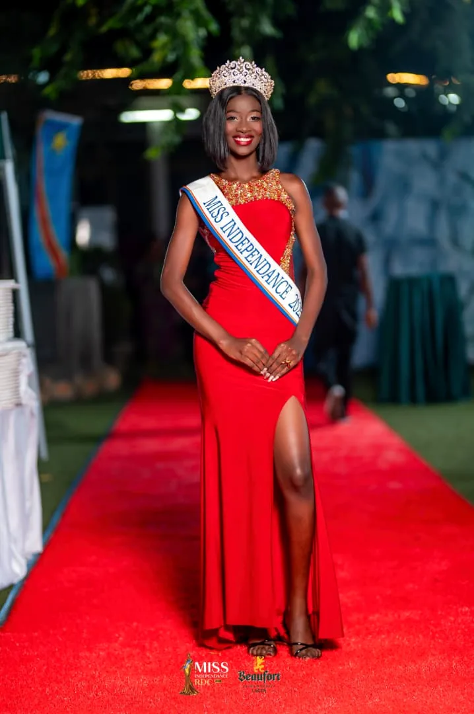

Voyage 1 · Lualaba & Haut-Katanga
Kolwezi · Lubumbashi
Caravanes, atelier « Les richesses du sous-sol », immersion « La Mine Responsable » et quart de finale en direct (30 → 20 candidates).
Miss RDC 2026 Le programme
Sélections provinciales, Atelier et Académie, tournée des provinces, trois shows en direct, puis une année de règne.
Le calendrierLe parcours Miss RDC 2026 se déroule de la mi-août à la fin décembre, avant l'année de règne.
Inscriptions en ligne et dans les points provinciaux, présélection sur dossier et vidéo, castings devant les comités provinciaux, puis la liste définitive des trente candidates.
Onze modules à l'Atelier Miss RDC, conçus sur le modèle du programme de Miss France.
Quart de finale à Lubumbashi (30 → 20), demi-finale à Moanda (20 → 10), grande finale à Kinshasa (10 → 1).
Ambassadrice de la RDC pendant un an : missions officielles, projet social et concours internationaux sous licence.
24 décembre 2026 Kinshasa
Élection de Miss RDC 2026 et de ses deux dauphines, en direct sur la télévision nationale.
Deux voyages dans des provinces à fort potentiel touristique : caravanes populaires, immersions économiques, épreuves culturelles et shows en direct.
Kolwezi · Lubumbashi
Caravanes, atelier « Les richesses du sous-sol », immersion « La Mine Responsable » et quart de finale en direct (30 → 20 candidates).
Matadi · Moanda
Caravane, écotourisme au parc marin des Mangroves (chaque Miss plante un arbre), site de Kitona, Agri-Tourisme et demi-finale en direct (20 → 10 candidates).
Le chronogramme officiel de la Coordination Nationale, ajustable selon les conventions de partenariat et les contraintes de sécurité.
Formation, culture, engagement citoyen et découverte du pays réel. Chaque séquence est filmée et racontée.
Master class, bibliothèque animée par des auteurs congolais, projections cinéma et débats d'idées, filmés au quotidien.
Une journée au cœur des grands chantiers de Kinshasa : routes, immobilier, bâtiments publics.
48 heures dans une entreprise minière certifiée, pour découvrir ses actions sociales et environnementales.
Une grande journée citoyenne d'assainissement et de reboisement urbain.
La gastronomie des 400 tribus du pays devient un show télévisé.
Une action caritative au profit des femmes et des filles déplacées.
Rencontre avec des agricultrices du Kongo-Central, sur une exploitation de la côte.
Une réception avec le corps diplomatique et la diaspora, et une lettre d'ambassadrice signée par chaque Miss.
Un atelier de citoyenneté numérique : contenus mobiles, sécurité en ligne, entrepreneuriat.

Onze modules pour préparer chaque candidate bien au-delà de l'apparence, au standard des grands concours internationaux.
Le public vote sur la plateforme digitale, le chatbot WhatsApp et l'application officielle.
Publiée dans le règlement et rappelée à chaque émission, pour la désignation des cinq finalistes et de la lauréate.
Canaux, coûts, plafonds et heure de clôture sont communiqués avant l'ouverture des votes.
Certifiés par un commissaire aux comptes ou un huissier, et archivés par le Secrétariat général.